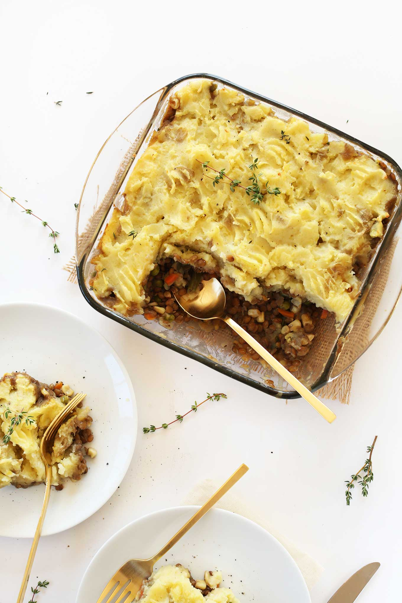

Vegan Shepherd's Pie

A hearty and satisfying vegan alternative to the traditional beef shepherd's pie.
Ingredients:
- Yukon Gold potatoes
- Brown or green lentils
- Yellow onion
- Spices (garlic powder, sea salt, black pepper, thyme)
- Tomato paste
- Mixed veggies
Steps:
- Slice larger potatoes and boil
- Saute onions and garlic
- Add tomato paste and spices, then lentils, stock, and thyme